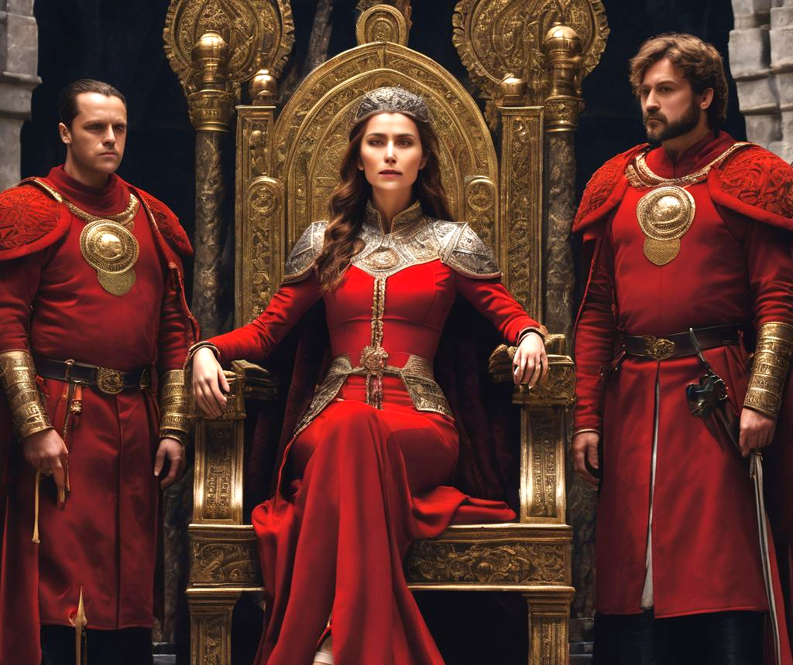

You enter the audience chamber of Nida Netherspear beside your bitter rival Mark Willow and kneel before the master of your guild. "Ah, my two favorite lieutenants." Nida says. Mark replies with a nod, "Lady Netherspear." Typical Mark, you think, always trying to impress Nida. Lost in thought, you miss the instructions of your mission, but Mark's outcry says it all. "No! Who has done this? A rival group? I’ll kill those mangy dogs for stealing it!" Of course, You think. Nida wants me to steal back what was stolen. The assignement of you and Mark suddently makes perfect sense, Mark will fight his way to get back whatever was stolen and you will sneak around to retrieve it, being the master thief you are. "Baron Phillip Van Henderson and his men ambushed my delivery and confiscated my riches. I care not for gold and silver, only the diadem. Failure to complete this task. . ." Nida trails off. Interesting that she doesn't care about the valuables but she does about the diadem, it must be worth more than all the gold in the vault. "We won't fail you" You say as you and Mark stand up. "Go now, retrieve my diadem, the spear now calls on you" Nida recites the guild's mantra. "And I embrace the spear’s calling." you and Mark say in unison, completing the mantra phrase and walking towards the door.
